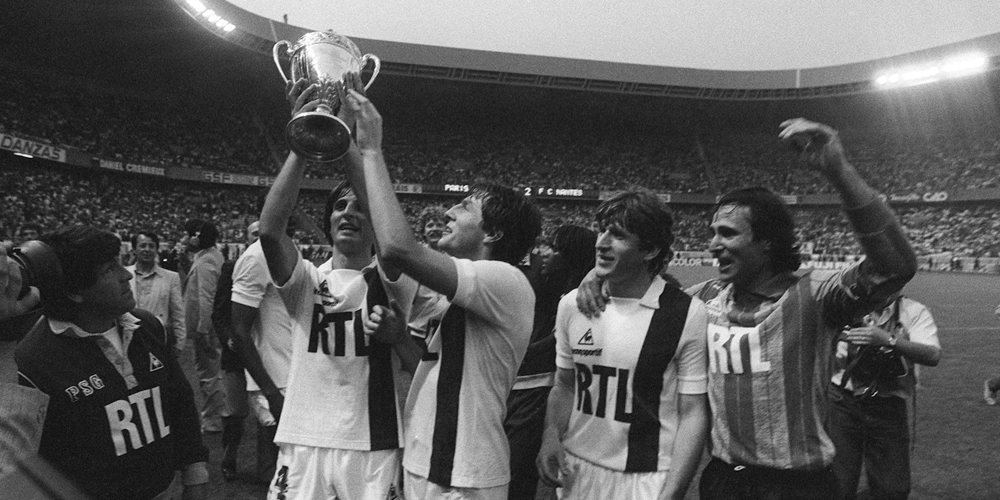
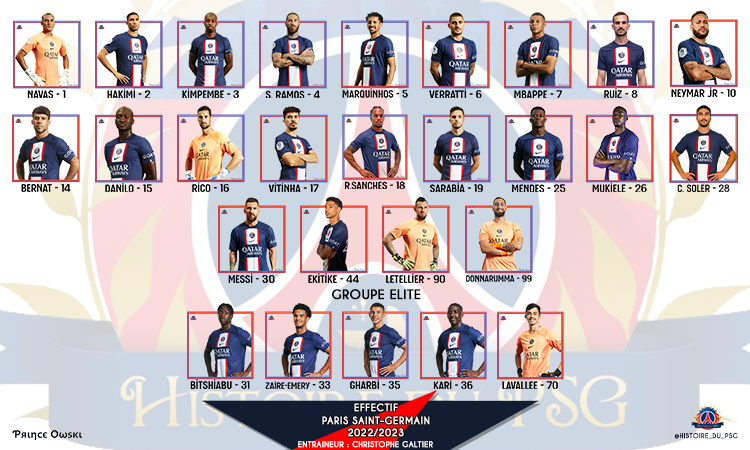
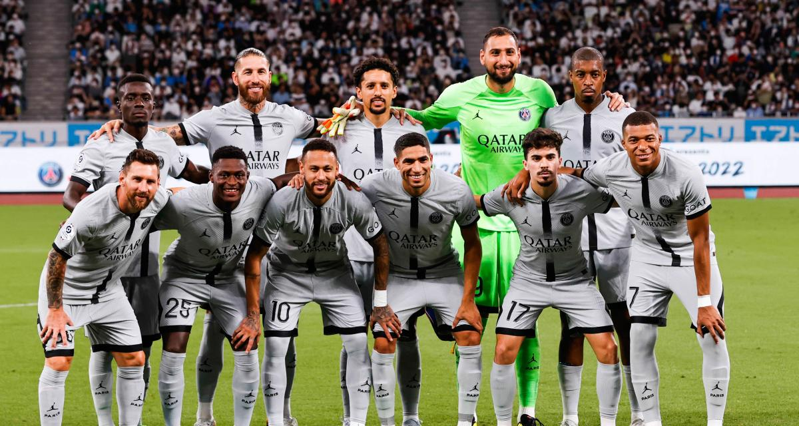
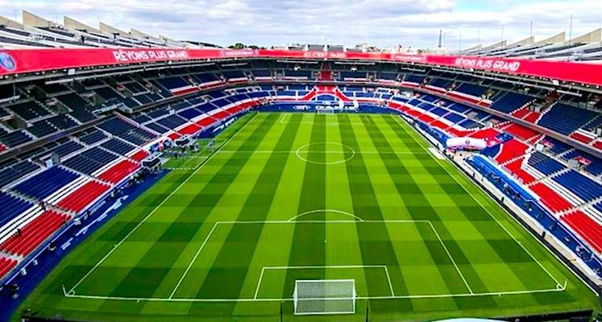

<!DOCTYPE html>
<html>
	<!-- Je suis dans un commmentaire -->
    <head>
    <!--La partie head n'apparait pas dans la fenetre du navigateur, sauf le titre qui est le nom de l'onglet qui s'ouvre dans le navigateur.
        Elle contient des infos importantes pour garantir un affichage correct, référencé et stylé -->
        <meta charset="UTF-8">
        <title>PSG</title>
    </head>
    <html>

</body>
</html>

    <!--La partie body englobe le contenu textuel structuré 
        et les liens vers :
        - soit des éléments multimédia (photo, audio, vidéo)
        - soit des pages déjà présentes sur le web 
        - soit d'autres pages que vous créez... -->

    <body>
        <!--Structurer son texte-->
		<link rel="stylesheet" href="style.css">
		<script src="script.js"></script>
        <h1>Le Paris Saint-Germain</h1>
		
		<p>Site pour tous les nouveaux supporters du grand club Le Paris Saint-Germain<p>
		


        <h2>Histoire</h2>
		<li> Le Stade saint-germanois (1904-1970) </li>
            <li> 1970-1973 : de la fusion au divorce </li>
			<li> 1973-1978 : l'ère Hechter, retour et maintien dans l'élite </li>
			<li> 1978-1991 : l'ère Borelli, premiers trophées majeurs et découverte de l'Europe </li>
			<li> 1991-2006 : l'ère Canal+ </li>
		    <li> 2006-2011 : l'ère Colony Capital, un échec </li>
			<li> Depuis 2011 : l'ère Qatar Sport Investments (QSI), changement de dimension </li>
		
		<p>Le Paris Saint-Germain Football Club, couramment abrégé en Paris Saint-Germain FC, Paris Saint-Germain, Paris SG, ou PSG, est un club de football français, basé à Saint-Germain-en-Laye et à Paris. C'est la section football du Paris Saint-Germain omnisports. Présent depuis la saison 1974-1975, le club s'entraîne au Camp des Loges à Saint-Germain-en-Laye et joue au Parc des Princes à Paris.<p>
		
        <p>Le Paris Saint-Germain voit le jour en 1970 lors de la fusion entre la section football du Stade saint-germanois, club fondé en 1904, et le Paris FC, club virtuel sans stade ni équipe créé dix-huit mois auparavant dans le but de redonner une équipe professionnelle à la capitale, après la chute du Racing Club de France et du Stade français. En 1972, le club est scindé en deux : le Paris FC gardant l'effectif et le statut professionnel, ainsi que l'occupation du Parc des Princes, tandis que le Paris Saint-Germain repart avec l'équipe amateur en Division 3 et prend alors domicile au stade Georges-Lefèvre. Deux ans après, en 1974, le Paris FC est relégué en deuxième division tandis que le PSG retrouve la première division et le Parc des Princes.<p>

        <p>Dirigé dans ses premières années par des personnalités comme Daniel Hechter puis Francis Borelli, le club est racheté en 1991 par le diffuseur du championnat à la télévision, Canal+, qui mène le club parisien à un grand succès pendant ses premières années. Ainsi, en 1996, le PSG remporte la Coupe d'Europe des vainqueurs de coupe, devenant le second club français à gagner une coupe d'Europe. En 2006, le PSG est vendu au fonds d'investissement américain Colony Capital, qui ne remporte pas de titre majeur hormis deux coupes nationales, puis en 2011 à Qatar Sports Investments (QSI), une filiale du fonds souverain qatarien Qatar Investment Authority (QIA). L'homme d'affaires et ex-tennisman qatarien Nasser Al-Khelaïfi devient le président-directeur général du club et lui injecte des moyens financiers très importants qui permettent d'acheter des joueurs parmi les plus chers au monde, tels Neymar et Kylian Mbappé en 2017 ou Lionel Messi en 2021. Le PSG devient alors un club d'une dimension mondiale.<p>

        <p>En 2015, le club réalise le premier « quadruplé » en remportant le championnat de Ligue 1, la Coupe de France, la Coupe de la Ligue et le Trophée des champions, performance rééditée en 2016, 2018 et 2020. Le club de la capitale atteint la finale de la Ligue des champions de l'UEFA lors de la saison 2019-2020. En 2022, le Paris Saint-Germain remporte son dixième titre de champion de France, égalant ainsi le record de l'AS Saint-Étienne.<p>
		<iframe width="560" height="315" src="https://www.youtube.com/embed/Mr23z9DBeic" title="YouTube video player" frameborder="0" allow="accelerometer; autoplay; clipboard-write; encrypted-media; gyroscope; picture-in-picture; web-share" allowfullscreen></iframe>
        <h2>Les joueurs </h2>
		<br>
		
		<p> Attaquants : <li>7	Kylian Mbappé	20/12/1998 (24 ans)	France	2018-2025 ;</li>
<li>10		Neymar Jr	05/02/1992 (30 ans)	Brésil	FC Barcelone	2017-2027 ;</li>
<li>30		Lionel Messi	24/06/1987 (35 ans)	Argentine	FC Barcelone	2021-2023 ;</li>
<li>44	  Hugo Ekitike	20/06/2002 (20 ans)	France -20 ans	Stade de Reims	2022-2023 ;</li>
 <p>
        <p> Milieux : <li>6	Marco Verratti	05/11/1992 (30 ans)	Italie	2012-2024;</li>
<li>8			Fabián Ruiz	03/04/1996 (26 ans)	Espagne		2022-2027;</li>
<li>15			Danilo Pereira	09/09/1991 (31 ans)	Portugal	2021-2025;</li>
<li>17			Vitinha	13/02/2000 (22 ans)	Portugal	2022-2027;</li>
<li>18			Renato Sanches	18/08/1997 (25 ans)	Portugal	2022-2027;</li>
<li>28			Carlos Soler	02/01/1997 (26 ans)	Espagne	2022-2027;</li>
<p>

        <p> Defenseur :<li> 2	Achraf Hakimi	04/11/1998 (24 ans)	Maroc	2021-2026 ;</li>
<li>3			Presnel Kimpembe	13/08/1995 (27 ans)	France	2015-2024 ;</li>
<li>4			Sergio Ramos	30/03/1986 (36 ans)	Espagne	2021-2023 ;</li>
<li>5			Marquinhos Capitaine	14/05/1994 (28 ans)	Brésil	2013-2024 ;</li>
<li>14			Juan Bernat	01/03/1993 (29 ans)	Espagne	2018-2025 ;</li>
<li>25			Nuno Mendes	19/06/2002 (20 ans)	Portugal  2022-2027 ;</li>
<li>26			Nordi Mukiele	01/11/1997 (25 ans)	France	2022-2027 ;</li>
<li>29			Timothée Pembélé	09/09/2002 (20 ans)	France espoirs	2020-2024 ;</li>
<p>

        <p> Gardiens :<li>16 Sergio Rico	01/09/1993 (29 ans)	Espagne	2020-2024 ;</li>
<li>90		Alexandre Letellier	11/12/1990 (32 ans)	France	2020-2024 ;</li>
<li>99		Gianluigi Donnarumma	25/02/1999 (23 ans)	Italie	2021-2026 ;</li>


        <h2>Le stade </h2>
		
		<p> Le Parc des Princes est depuis juillet 1974 le stade principal du club. L'enceinte, inaugurée le 25 mai 1972, fut utilisée par le PSG pour la première fois dès le 10 novembre 1973 à l'occasion d'un match de deuxième division face au Red Star, joué en lever de rideau d'une rencontre de Division 1, Paris FC-FC Sochaux. Entre 1978 et 1979, le club partage son stade avec le Paris FC, puis avec le Matra Racing entre 1984 et 1990.<p>

<p>Les équipes nationales de football et de rugby à XV utilisaient également le stade jusqu'à l'inauguration du Stade de France en février 1998. Le transfert du PSG au Stade de France est un temps évoqué, mais finalement abandonné. Le club, toujours locataire du Parc, s'approprie toutefois un peu plus le stade en installant notamment son siège dans un nouveau bâtiment inauguré le 18 février 2002259. Les couleurs des sièges, bleus, rouges ou jaunes de 1972 à 1998, sont rouges ou bleus de 1998 à 2016. En novembre 2013, le Paris Saint-Germain annonce la rénovation du Parc des Princes en accord avec la ville de Paris, pour un montant de 75 millions d'euros. Dès lors, le club finance le remplacement des sièges, l'implantation d'une pelouse nouvelle génération et surtout la construction de loges VIP pour maximiser les revenus261. Les nouveaux sièges installés forment un motif ressemblant à la Tour Eiffel, emblème du club, en tribune Paris et en virages entourée par des bandes rouges et blanches.<p>

<p>D'une capacité actuelle de 48 583 places assises, le stade est classé catégorie 4 au classement UEFA.<p>

            <iframe width="560" height="315" src="https://www.youtube.com/embed/oEPb8kV9O80" title="YouTube video player" frameborder="0" allow="accelerometer; autoplay; clipboard-write; encrypted-media; gyroscope; picture-in-picture; web-share" allowfullscreen></iframe>

	
       

         
        
        <!-- une liste sans numérotation-->
        <ol>
        <h1>  </h1>
        </ol> 

        <!-- une liste avec numérotation-->
        <ol>
            
        </ol> 

        <!-- pour integrer une image, enregistrée dans le même répertoire que le présent fichier HTML-->
        <br>

        <!--pour integrer une vidéo, enregistrée dans le même répertoire que le présent fichier HTML-->
        
       

        <!-- intégration d'une vidéo présente sur YouTube : cliquer sur Partager, puis sur Intégrer(Embed) puis copier/coller le code.
        Le code consiste en une balise <iframe> -->

        <!--pour integrer un fichier son, enregistré dans le même répertoire que le présent fichier HTML-->
        <audio controls="controls">
                <source src="nom_du_fichier_som.mp3">
        </audio>
		<br>

        <!--pour integrer un lien vers un autre site -->
        <a href="https://fr.wikipedia.org/wiki/Paris_Saint-Germain_Football_Club"> Pour tout savoir en details </a>
        <br>
        <!--pour integrer un lien vers un autre page HTML, enregistrée dans le même répertoire que le présent fichier HTML-->
        <a href="file:///C:/Users/paris/Downloads/page2.html.html">Si vous voulez en savoir plus sur le Palmarès et Les jeunes du Paris Saint-Germain</a><br>
		
		<style>


	</body>
</html>